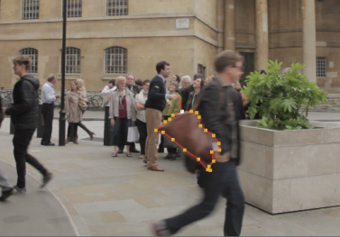
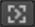
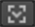
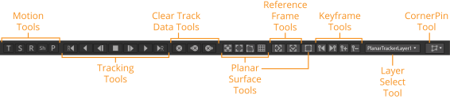
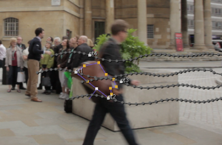
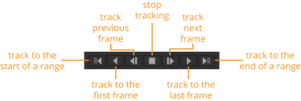
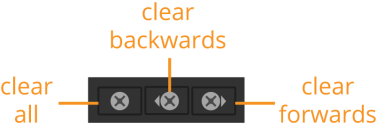
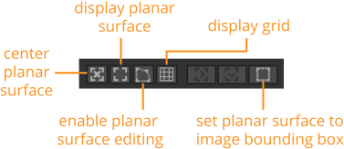
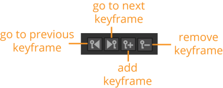
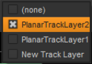

在跟踪平面之前，需要使用 Roto 节点绘制平面。
可以使用 PlanarTracker 跟踪刚性对象和在整个轨迹中轻微变形的对象。当 PlanarTracker 试图将平面与要跟踪的对象匹配时，刚性对象比变形的对象获得更好的跟踪结果。
例如，物体的墙或平面是很好的平面，但是跟踪人脸或人也可以获得很好的结果。同样重要的是，你正在跟踪的飞机有一些纹理，并且飞机在跟踪的任何时候都不会被完全遮挡。跟踪没有纹理和很少要跟踪的特征的表面不太可能产生良好的结果。
| 1。 | 您可以执行以下操作之一: |
• 通过选择插入 PlanarTracker 节点 变换 > PlanarTracker ,或按 tab 键，键入 PlanarTracker，然后按 返回 。这将插入一个已经处于 PlanarTracker 模式的旋转节点。您可以使用它绘制 Bezier 形状，该形状会自动添加为轨迹对象。形状的边界显示为紫色，表示这一点，形状会自动添加到一个名为 PlanarTrackLayer1 在笔触/形状列表中。
OR
• 创建 Roto 或 RotoPaint 节点，并使用它在要跟踪的平面周围绘制 Bezier 形状。新形状的边界在查看器中显示为红色，Bezier 形状项目显示在 “描边/形状” 列表中。该形状保持为正常旋转形状，直到它转换为轨迹对象。

| 2. | 如果您正在绘制多个形状，您可以将它们排列在笔触/形状列表中，以告诉 PlanarTracker 它们是不同的层。将你的形状从最接近相机 (列表的顶部) 订购到最远 (列表的底部)，PlanarTracker 会自动保留当前层上方的任何轨道层。 |
| 3. | 确保你仍然和你以前画贝塞尔形状在同一个框架上。 |
注意: 选择要在其上绘制旋转形状的框架时，该框架将成为您的参考框架。当你继续跟踪你的飞机时，重要的是你总是从同一个参考系开始。移动到您的参考框架使用 转到参考框架 按钮  。在这个过程中，你可以决定改变你的参考框架。您可以通过单击 设置参考框架  在观众。
现在，您可以继续跟踪您绘制的平面:
根据您是否选择插入 PlanarTracker 节点或 Roto (或 RotoPaint) 节点，执行以下操作之一:
如果选择插入 PlanarTracker 节点:
| 1。 | 使用查看器上方的跟踪工具跟踪旋转形状。 |

| 2. | 请参阅 查看器中的跟踪器菜单选项 欲了解更多信息。 |
如果选择插入 Roto 或 RotoPaint 节点:
| 1。 | 在旋转形状上单击鼠标右键，然后选择以下选项之一: |
• 平面跟踪此形状 -选择此选项可将旋转形状转换为不包含任何跟踪数据的跟踪对象 (如果还没有)。
• 平面跟踪此形状 (fwd) -选择这个来跟踪你的形状，而轨道是向前播放。
• 平面跟踪此形状 (bkwd) -选择这个来跟踪你的形状，而轨道是向后播放。
| 2. | 如果选择了后两个选项之一，现在将在整个时间线中跟踪您的形状。跟踪形状时将显示进度对话框。 |
如果选择第一个选项将 roto 形状转换为没有任何跟踪数据的跟踪对象，则可以使用查看器上方的跟踪工具向前或向后跟踪。请参阅 查看器中的跟踪器菜单选项 欲了解更多信息。当您选择跟踪器菜单上方的任何选项时，工具将显示在查看器上方。
形状现在会自动添加到一个名为 PlanarTrackLayer1 在笔触/形状列表中，在查看器中以紫色显示，表示它已转换为轨迹对象。
| 3. | 在笔触/形状列表中，紫色矩形出现在 PT 您的形状旁边的列。您可以打开和关闭紫色矩形，将形状恢复为正常的旋转形状，而不是轨迹对象。 |
注意: 在将旋转形状转换为轨迹对象后，只能在旋转形状或轨迹对象之间切换形状。
| 4. | 选择 跟踪 Roto 节点属性中的选项卡显示跟踪数据，如下所示。 |

您可以使用跟踪器菜单选项来执行更高级的跟踪。这些选项仅在将形状转换为轨迹对象后在查看器中可见。
在跟踪对象之前，可以使用 “跟踪运动” 控件指定 PlanarTracker 可以预期的运动类型。以下选项可用:
• 翻译 -选择此，以便跟踪器期望翻译。
• 旋转 -选择此，以便跟踪器期望旋转。
• 规模 -选择此，以便跟踪器期望缩放。
• 剪切 -选择此，以便跟踪器期望剪切。
• 透视 -选择此，以便跟踪器期望改变视角。
使用 跟踪 按钮 要在整个素材中向后或向前跟踪，或者如果需要，请选择指定的帧范围。

您也可以逐帧跟踪。例如，如果你正在跟踪的飞机在整个镜头中是可见的，向前跟踪可能是你所需要的。如果飞机只在镜头的一部分部分可见，那么首先跟踪整个飞机可见的部分可能是个好主意, 然后分别跟踪其余的镜头。
有了跟踪控制，你可以跟踪和重新跟踪你的镜头。有关更多信息，请参见 跟踪和稳定 .
您可以使用清除按钮清除已经创建的跟踪信息。

• 清除 所有 -清除 PlanarTracker 创建的所有跟踪信息。
• 清除 向后 -从当前帧向后清除所有跟踪信息。
• 清除 前锋 -清除当前帧中的所有跟踪信息。
跟踪一个或多个形状后，您可以通过在时间轴上来回移动来查看结果。例如，如果您的旋转形状在跟踪过程中漂移，或者您只想更改它，则可以调整平面曲面形状。为此，可以使用平面曲面控件。

• 中心平面曲面 -选择此选项可在播放期间将查看器中的平面曲面居中。
• 显示平面曲面 -选择该选项以显示平面曲面的边界。
• 启用平面曲面编辑 -选择此选项，以便可以通过在查看器中拖动角点来编辑平面曲面。
• 显示网格 -选择此选项可在平面曲面上显示网格。
• 将平面曲面设置为图像边界框 -选择此选项可将平面曲面更改为与图像边界框相同。
可以使用查看器上方的参考控件转到当前参考框架，或者将参考框架更改为当前框架。
您可以设置和删除关键帧，并使用查看器上方的关键帧控件转到上一个或下一个关键帧。

您可以使用层下拉列表快速选择各种平面跟踪器层，或添加新层。

您可以使用 CornerPin 下拉菜单插入 CornerPin 节点。CornerPin2D 工具旨在将图像序列的四个角映射到来自跟踪数据的位置。实际上，这允许你用另一个图像序列替换任何四角特征。

CornerPin 下拉列表为您提供了几种不同类型的 CornerPin，您可以从中选择:
• 相对 -根据当前帧和参考帧之间的相对变换扭曲图像。图像在参考框架中保持不变。也可以拾取相对 CornerPin 节点的烘焙版本。烘焙节点具有从 PlanarTracker 复制的关键帧值，而不是链接它们的表达式。
• 绝对 -要使用 到 和 从 用于将图像精确地放置在选定平面内的控件。这可能会扭曲整个镜头的图像。这将附加并自动将其格式设置为当前选定节点的任何尺寸。您也可以拾取绝对 CornerPin 节点的烘焙版本。烘焙节点具有从 PlanarTracker 复制的关键帧值，而不是链接它们的表达式。
• 稳定 -对图像应用逆变换，有效地将图像锁定在其位置，并在镜头中稳定图像。这种类型的角钉对漂移修正和确保跟踪结果可靠最有用。您也可以选择 跟踪器 创建烘焙跟踪器节点以进一步减少抖动。您还可以拾取稳定 CornerPin 节点的烘焙版本。烘焙节点具有从 PlanarTracker 复制的关键帧值，而不是链接它们的表达式。
• 跟踪器 - 创建一个跟踪器节点，其中四个轨迹设置为每个跟踪的角点。这些跟踪点让您可以访问跟踪器的综合功能，如轨迹平均和增强的平滑控制。 请参阅 跟踪和稳定 欲了解更多信息。
选择 跟踪 Roto 节点属性中的选项卡，以访问更多跟踪选项。
| 跟踪渠道 | 使用此下拉菜单选择要跟踪的频道集。 |
| 图像通道 | 使用此选项可以从通道集中选择单个通道。您不需要选择单个频道，而是可以将其保留为 没有 ,默认。 |
| 预跟踪过滤器 |
在比较图像修补程序之前，将应用选定的过滤器。您可以选择以下选项之一: • 没有 -这将禁用所有预过滤，这允许您完全控制调整输入图像以进行跟踪。 • 调整对比度 -这将延伸图像对比度，以更好地适应跟踪算法。建议使用此选项。 • 灰度 -这将任何输入的 RGB 通道转换为灰度图像，以便更快地处理。 |
| 调整亮度变化 | 如果您的镜头随着时间的推移逐渐或突然改变亮度，启用此选项将执行额外的预过滤，以帮助补偿这些变化。这可能会使轨道变慢和不准确，因此只有在需要处理亮度变化时才应选择。 |
| 夹超白，零度以下的镜头 |
选择此选项可将跟踪补丁像素值夹在 0 和 1 之间。 注意: 如果要使用超白或低于零的镜头的完整动态范围进行跟踪，请禁用此选项。 |
| 隐藏进度条 | 由于可以使用查看器上方的工具停止跟踪，因此可以选择隐藏跟踪形状时显示的进度对话框。 |
您可以使用 CornerPin 下拉菜单选择要插入的角接点节点的类型。请参阅 CornerPin 下拉列表 了解更多关于不同类型的 CornerPin 的信息。选择所需的角脚类型后，可以按 创建 插入它。
选择 链路输出 复选框链接到 PlanarTracker 输出，以便导出的节点与轨道一起更新。
跟踪对象时，会自动填充 CornerPin 点。当你绘制一个旋转形状并将其转换成轨迹对象时, Nuke 自动在形状周围放置 4 个角销。这些是被跟踪的点。
您可以通过偏移四个点中的任何一个或全部来更正四个自动放置的点。要偏移一个点，只需在查看器中单击并将其拖动到正确的位置。
这是用作参考的帧，用于比较包含跟踪数据的所有其他帧。它默认为用于跟踪的第一帧。你可以进入一个新的帧数, 参考框架 输入字段。
|
|